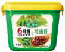
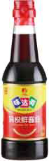
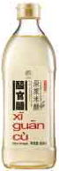

品牌家族
欣和创立于 1992 年，从一袋酱开始，走进厨房，始终关爱。不论做哪款产品，欣和始终秉持初心，一切只为家人安心享用每一餐，乐活健康每一天。在过往的 20 年，拥有 10 个专业化生产基地，旗下拥有 11 个产品品牌。

-
0 -
1 -
2 -
3 -
4 -
5 -
6 -
7 -
8 -
9 -
10 -
11 -
12 -
13 -
14 -
15 -
16 -
17 -
18 -
19 -
20 -
21 -
22 -
23
-

0创于 1994 年，由山东人大葱蘸酱饮食习惯而得名，是欣和旗下专注于生产酿造酱的品牌。最多50個字是到這邊。
浏览更多品牌信息 -
1创于 1994 年，由山东人大葱蘸酱饮食习惯而得名，是欣和旗下专注于生产酿造酱的品牌。最多50個字是到這邊。
浏览更多品牌信息 -
2创于 1994 年，由山东人大葱蘸酱饮食习惯而得名，是欣和旗下专注于生产酿造酱的品牌。最多50個字是到這邊。
浏览更多品牌信息 -
3创于 1994 年，由山东人大葱蘸酱饮食习惯而得名，是欣和旗下专注于生产酿造酱的品牌。最多50個字是到這邊。
浏览更多品牌信息 -
4创于 1994 年，由山东人大葱蘸酱饮食习惯而得名，是欣和旗下专注于生产酿造酱的品牌。最多50個字是到這邊。
浏览更多品牌信息 -
5创于 1994 年，由山东人大葱蘸酱饮食习惯而得名，是欣和旗下专注于生产酿造酱的品牌。最多50個字是到這邊。
浏览更多品牌信息 -
6创于 1994 年，由山东人大葱蘸酱饮食习惯而得名，是欣和旗下专注于生产酿造酱的品牌。最多50個字是到這邊。
浏览更多品牌信息 -
7创于 1994 年，由山东人大葱蘸酱饮食习惯而得名，是欣和旗下专注于生产酿造酱的品牌。最多50個字是到這邊。
浏览更多品牌信息 -
8创于 1994 年，由山东人大葱蘸酱饮食习惯而得名，是欣和旗下专注于生产酿造酱的品牌。最多50個字是到這邊。
浏览更多品牌信息 -
9创于 1994 年，由山东人大葱蘸酱饮食习惯而得名，是欣和旗下专注于生产酿造酱的品牌。最多50個字是到這邊。
浏览更多品牌信息 -
10创于 1994 年，由山东人大葱蘸酱饮食习惯而得名，是欣和旗下专注于生产酿造酱的品牌。最多50個字是到這邊。
浏览更多品牌信息 -
11创于 1994 年，由山东人大葱蘸酱饮食习惯而得名，是欣和旗下专注于生产酿造酱的品牌。最多50個字是到這邊。
浏览更多品牌信息 -
12创于 1994 年，由山东人大葱蘸酱饮食习惯而得名，是欣和旗下专注于生产酿造酱的品牌。最多50個字是到這邊。
浏览更多品牌信息 -
13创于 1994 年，由山东人大葱蘸酱饮食习惯而得名，是欣和旗下专注于生产酿造酱的品牌。最多50個字是到這邊。
浏览更多品牌信息 -
14创于 1994 年，由山东人大葱蘸酱饮食习惯而得名，是欣和旗下专注于生产酿造酱的品牌。最多50個字是到這邊。
浏览更多品牌信息 -
15创于 1994 年，由山东人大葱蘸酱饮食习惯而得名，是欣和旗下专注于生产酿造酱的品牌。最多50個字是到這邊。
浏览更多品牌信息 -
16创于 1994 年，由山东人大葱蘸酱饮食习惯而得名，是欣和旗下专注于生产酿造酱的品牌。最多50個字是到這邊。
浏览更多品牌信息 -
17创于 1994 年，由山东人大葱蘸酱饮食习惯而得名，是欣和旗下专注于生产酿造酱的品牌。最多50個字是到這邊。
浏览更多品牌信息 -
18创于 1994 年，由山东人大葱蘸酱饮食习惯而得名，是欣和旗下专注于生产酿造酱的品牌。最多50個字是到這邊。
浏览更多品牌信息 -
19创于 1994 年，由山东人大葱蘸酱饮食习惯而得名，是欣和旗下专注于生产酿造酱的品牌。最多50個字是到這邊。
浏览更多品牌信息 -
20创于 1994 年，由山东人大葱蘸酱饮食习惯而得名，是欣和旗下专注于生产酿造酱的品牌。最多50個字是到這邊。
浏览更多品牌信息 -
21创于 1994 年，由山东人大葱蘸酱饮食习惯而得名，是欣和旗下专注于生产酿造酱的品牌。最多50個字是到這邊。
浏览更多品牌信息 -
22创于 1994 年，由山东人大葱蘸酱饮食习惯而得名，是欣和旗下专注于生产酿造酱的品牌。最多50個字是到這邊。
浏览更多品牌信息 -
23创于 1994 年，由山东人大葱蘸酱饮食习惯而得名，是欣和旗下专注于生产酿造酱的品牌。最多50個字是到這邊。
浏览更多品牌信息